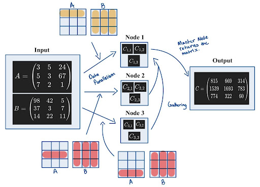
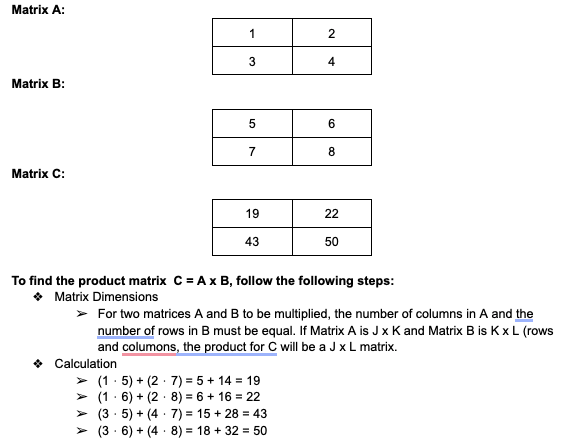
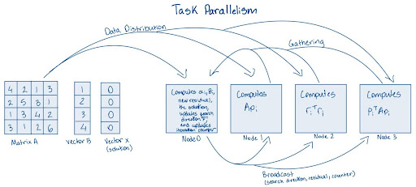
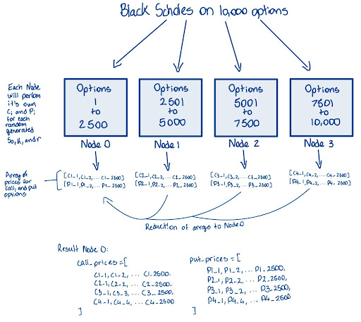
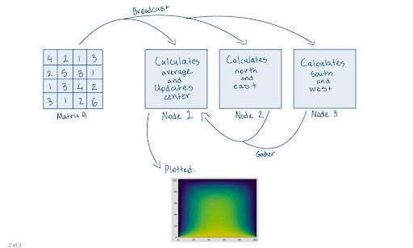

Tutorial#
Introduction#
cuPyNumeric is a NumPy-compatible library designed for large-scale computing. It is a distributed and accelerated drop-in replacement for the NumPy API, meaning that the same code running on a laptop can scale to multi-node, multi-GPU execution. cuPyNumeric is built on Legate, which provides scalable and accessible GPU acceleration and distributed computing capability by leveraging the Legion programming model. The goal of Legate and libraries like cuPyNumeric is to democratize high-performance computing by making it simpler to harness the power of large CPU and GPU clusters.
cuPyNumeric vs NumPy#
cuPyNumeric is designed to have all the features that NumPy has, making it easy for NumPy users to try out cuPyNumeric on their own problems. However, there are several key differences:
Scalability: cuPyNumeric has the ability to run on large CPU/GPU clusters, making it better suited for larger data processing, e.g tasks related to emerging AI workloads.
GPU Acceleration: Since cuPyNumeric leverages GPU acceleration, it can afford large performance improvements over NumPy, which is limited to CPU execution. cuPyNumeric can make it significantly easier to tackle large quantities of data faster, by leveraging faster GPUs.
Distributed Computing: cuPyNumeric supports distributed computing, allowing for computations to be spread across multiple nodes. This enables users to handle large problems more efficiently, reducing the total computation time compared to using NumPy alone.
Hardware requirements#
Single-node setup#
Suggested requirements:
GPU: Nvidia V100 or later
CPU: AMD EPYC or Intel Xeon (with multi-core support, at least 16 cores)
System memory: 64 GB or more (depending on dataset size)
Other options#
cuPyNumeric also works on HPC clusters, e.g. the large Perlmutter supercomputerlocated at the National Energy Research Scientific Computing Center (NERSC).
Basic Linux installation#
First, download CUDA on your computer, following these steps:
Go to CUDA Toolkit Downloads.
Select your operating system, architecture, distribution, and version.
Choose the installer type (e.g. runfile or deb).
Follow the provided installation instructions specific to your selected options.
Next, install cuPyNumeric using either pip or conda.
Pip#
Python wheel packages are available for Linux (x86 and aarch64) for Python 3.11–3.13 from PyPI. To install these into an existing environment, run the command:
pip install nvidia-cupynumeric
or to create a new environment:
python -m venv myenv
source myenv/bin/activate
pip install nvidia-cupynumeric
This will install the latest version of cuPyNumeric and the corresponding version of Legate.
Conda#
First, install Conda on your computer by pasting the following commands into your terminal:
mkdir -p ~/miniforge3
wget https://github.com/conda-forge/miniforge/releases/latest/download/Miniforge3-Linux-x86_64.sh -O ~/miniforge3/miniforge.sh
bash ~/miniforge3/miniforge.sh -b -u -p ~/miniforge3
rm -rf ~/miniforge3/miniforge.sh
~/miniforge3/bin/conda init bash
~/miniforge3/bin/conda init zsh
source ~/.bashrc
Next, install Legate and cuPyNumeric by executing these commands in the terminal:
conda create -n legate -c conda-forge -c legate cupynumeric
conda activate legate
HPC cluster installation#
Installing on HPC clusters such as Perlmutter requries extra steps to build wrappers for system MPI and GASNet libraries. See the Legate documentation for GASNet-based Installation for full details.
Running cuPyNumeric code#
We will start by demonstrating with a simple dot-product example. Create a
new file file main.py containing the following code:
from legate.timing import time
import cupynumeric as np
# Define the size of the vectors
size = 100000000
start_time = time()
# Generate two random vectors of the specified size
vector1 = np.random.rand(size)
vector2 = np.random.rand(size)
# Compute the dot product using cuPyNumeric
dot_product = np.dot(vector1, vector2)
end_time = time()
elapsed_time = (end_time - start_time)/1000
print("Dot product:", dot_product)
print(f"Dot product took {elapsed_time:.4f} ms")
Single node#
To run the above code on a single workstation with two GPUs, execute the following command:
legate --gpus 2 ./main.py
Multi-node HPC#
Before running examples on systems like Perlmutter, create an interactive session. For example:
salloc --nodes 2 --ntasks-per-node 1 --qos interactive --time 01:30:00 --constraint gpu --gpus-per-node 4 --account=<acct_name>
This command creates an allocation on 2 GPU nodes, with 4 GPUs per node.
Ensure that the legate environment is activated. If not, load the conda
module and activate the environment. Now, run the sample program:
legate --gpus 4 --launcher srun --nodes 2 ./main.py
This invocation runs legate through the legate driver and it executes the
main.py example. In general, Legate can be started through Python by
simply loading the appropriate modules, but in a multi-node setting the driver
needs to be used to enable –launcher and related options. To see more details
of the resulting invocation, add the --verbose option before ./main.py.
For more information on Command-Line Interface Options refer to the sections
below or refer to Running Legate Programs.
Running the code above produces output like the following when run on Perlmutter:
Dot product: 25001932.012924932
Dot product took 141.2350 ms
Dot product: 25001932.012924932
Dot product took 141.2350 ms
Note that there are two duplicated outputs. By default, legate outputs all
output from all ranks, so the result will be repeated exactly as many times
as the number of Legate ranks (2 in the example above). Set the environment
variable LEGATE_LIMIT_STDOUT=1 to only see output from the first rank.
Examples#
Matrix multiplication#
Matrix multiplication is a basic operation where to two matrices are combined to produce a new matrix. The new matrix has elements that were computed as the sum of the products of the corresponding rows of the first matrix and the columns of the second matrix. When scaling matrix multiplication, multiple factors like load balancing and parallelization must be considered. As the work is distributed among the different devices, handling partial sums for the matrices becomes crucial, and may require reduction on a larger scale. When using cuPyNumeric, all of these fundamental aspects are handled by the library, and the user can focus on the high-level algorithm.
If users don’t use cuPyNumeric, they will have to explicitly worry about things such as distributing inputs, gathering, and synchronization while writing their code. Below is an image depicting the typical sort of scatter-gather method found in data parallelism.
(NOTE: The image below does not depict cuPyNumeric’s approach to parallelism. Instead, it illustrates how parallelism might be approached without using cuPyNumeric.)
 Running on CPU#
NumPy#
Create a new file named simple_mm.py for our matrix multiplication, and
paste in the NumPy code below:
from legate.timing import time
import numpy as np
start_time = time()
size = 10000
A = np.random.randn(size,size)
B = np.random.randn(size,size)
C = np.matmul(A,B)
end_time = time()
elapsed_time = (end_time - start_time)/1000
print(f"Problem size: {size}")
print(f"Matrix multiplication took {elapsed_time:.4f} ms")
cuPyNumeric#
To run the same code with cuPyNumeric instead of NumPy, make a one line change to the imports:
from legate.timing import time
import cupynumeric as np # <--- one changed import
start_time = time()
size = 10000
A = np.random.randn(size,size)
B = np.random.randn(size,size)
C = np.matmul(A,B)
end_time = time()
elapsed_time = (end_time - start_time)/1000
print(f"Problem size: {size}")
print(f"Matrix multiplication took {elapsed_time:.4f} ms")
Now, execute this command:
legate --cpus 1 --sysmem 8000 ./simple_mm.py
This produces output like the following:
Problem size: 10000
Matrix multiplication took 69664.2020 ms
Running on GPU#
from legate.timing import time
import cupynumeric as np
start_time = time()
size = 10000
A = np.random.randn(size,size)
B = np.random.randn(size,size)
C = np.matmul(A,B)
end_time = time()
elapsed_time = (end_time - start_time)/1000
print(f"Problem size: {size}")
print(f"Matrix multiplication took {elapsed_time:.4f} ms")
This time around we will increase the size of the problem to 20,000, and use one GPU (edit the file to change the size):
legate --gpus 1 --sysmem 2000 --fbmem 12000 ./simple_mm.py
This produces output like the following:
Problem size: 20000
Matrix multiplication took 2593.2960 ms
Running on GPU cluster#
In this section, experiments will be conducted on Perlmutter. First, allocate the resources:
salloc --nodes 2 --ntasks-per-node 1 --qos interactive --time 01:30:00 --constraint gpu --gpus-per-node 4 --account=<acct>
Now let’s use 2 gpus (1 node) to solve a bigger problem, the problem size this time around will be 40,000:
legate --gpus 2 --launcher srun --nodes 1 --sysmem 2000 --fbmem 24000 --eager-alloc-percentage 10 ./simple_mm.py
This produces output like the following when run on Perlmutter:
srun: warning: can't run 1 processes on 2 nodes, setting nnodes to 1
Problem size: 40000
Matrix multiplication took 4378.6040 ms
In the above output, there is no need to worry about the srun warning. Two nodes were allocated, but this command only uses 1, thus the warning. Now let’s use 4 gpus (1 node) to solve a bigger problem, the problem size this time around will be 70,000:
legate --gpus 4 --launcher srun --nodes 1 --sysmem 2000 --fbmem 38000 --eager-alloc-percentage 10 ./simple_mm.py
This produces output like the following when run on Perlmutter:
srun: warning: can't run 1 processes on 2 nodes, setting nnodes to 1
Problem size: 70000
Matrix multiplication took 11680.5460 ms
Now let’s use 8 gpus (2 node) to solve a bigger problem, the problem size this time around will be 100,000:
legate --gpus 4 --launcher srun --nodes 2 --sysmem 2000 --fbmem 38000 --eager-alloc-percentage 10 ./simple_mm.py
This produces output like the following when run on Perlmutter:
Problem size: 100000
Matrix multiplication took 16969.5050 ms
Problem size: 100000
Matrix multiplication took 16969.5050 ms
Conjugate gradient#
The conjugate gradient (CG) method is an iterative algorithm that is utilized to solve systems of linear equations of the form:
\(A\) is a symmetric positive-definite matrix, \(\mathbf{x}\) is an unknown vector that we want to solve for, and \(\mathbf{b}\) is a known vector.
CG iteratively improves the estimate for \(\mathbf{x}\) by optimizing along conjugate directions. This process minimizes the following quadratic function, which is at its minimum when \(\mathbf{x}\) solves \(A \mathbf{x} = \mathbf{b}\):
Below is an image of how to parallelize CG using Task parallelism. Task parallelism occurs when different tasks are executed across multiple nodes/processors/cores.
(NOTE: The image below does not depict cuPyNumeric’s approach to parallelism. Instead, it illustrates how parallelism might be approached without using cuPyNumeric.)
When parallelizing the Conjugate Gradient method on high-performance computing (HPC) systems, several critical factors must be addressed.
First and foremost in task parallelism, it is important to distribute the tasks correctly, as improper partitioning can lead to load imbalances during computations. Clearly, in this depiction, distributing the tasks correctly is challenging and can significantly reduce efficiency. As such, finding an effective distribution strategy can be difficult at times.
Additionally, synchronization is crucial, as nodes may require information from one another before they can execute their calculations. For instance, at the beginning of each iteration, synchronization ensures that all nodes have the most up-to-date data and are aligned in their computations.
Finally, effective broadcasting of data is essential. Nodes may need to access results computed by the master node to proceed with their respective tasks. Addressing these factors will significantly enhance the efficiency and scalability of the parallelized Conjugate Gradient method.
These challenges highlight the complexities of parallelizing the CG method without advanced libraries. However, utilizing cuPyNumeric can alleviate many of these concerns, as it provides optimized data structures and operations that inherently address issues of load balancing, communication efficiency, and synchronization. cuPyNumeric streamlines the parallelization process, allowing for more straightforward implementation and improved performance.
Running on CPU#
Create a new file for our CG code. Name it cg.py, and paste in the code
at this link: CG code.
Next, create another file benchmark.py in the same directory with this
code: Benchmark code.
In order to run the following file, run the command down below, this will be a 10,000 x 10,000 2-d adjacency system:
legate --cpus 1 --sysmem 16000 ./cg.py --num 100 --check --time
Running on GPU#
This time around we will increase the size of the problem to generate roughly a 22,500 by 22,500 2-d adjacency system, and use one GPU:
legate --gpus 1 --sysmem 48000 --fbmem 14000 ./cg.py --num 150 --check --time
This produces output like the following:
Generating 22500x22500 2-D adjacency system without corners...
Solving system...
Converged in 725 iterations
Checking result...
PASS!
Elapsed Time: 5384.21 ms
Now let’s use 2 GPUs (1 node) to solve a bigger problem, the size of the problem will be a 50625 x 50625 2-d adjacency system:
legate --gpus 2 --sysmem 40000 --fbmem 38000 ./cg.py --num 225 --check --time
This produces output like the following:
Generating 50625 x 50625 2-D adjacency system without corners...
Solving system...
Converged in 1100 iterations
Checking result...
PASS!
Elapsed Time: 11432.713 ms
Now let’s use 4 GPUs (1 node) to solve a bigger problem, the size of the problem will be a 75625 x 75625 2-d adjacency system:
legate --gpus 4 --sysmem 40000 --fbmem 38000 ./cg.py --num 275 --check --time
This produces output like the following:
Generating 75625x75625 2-D adjacency system without corners...
Solving system...
Converged in 1300 iterations
Checking result...
PASS!
Elapsed Time: 13012.767 ms
Black-Scholes#
The Black-Scholes model is a mathematical model developed by economists Fisher Black, Myron Scholes, and Rober Merton in the early 1970s. The model is used to calculate the theoretical price of stock options.
Given the following inputs
Current stock price (\(\boldsymbol{S0}\)): The price of the stock at the time of option pricing.
Strike price (\(\boldsymbol{K}\)): The price at which the option can be exercised.
Time to expiration (\(\boldsymbol{T}\)): How long until the option expires, measured in years.
Risk-Free rate (\(\boldsymbol{r}\)): The theoretical return on an investment with no risk, often based on government bonds.
Volatility (\(\boldsymbol{\sigma}\)): The degree of variation in the stock price; higher volatility increases option prices.
The model is given by the formulas:
Where:
and \(N(x)\) is the cumulative distribution function of the standard normal distribuation
The illustration below demonstrates how the Black-Scholes model might be used to compute call and put option prices for 10,000 options distributed across four worker nodes. Each node is responsible for processing a portion of the total calculations, allowing for efficient parallel computation. Once the calculations are complete, the results are collected and aggregated at a master node.
While the diagram depicts the results being stored in arrays, the actual code implementation does not explicitly store the results in this manner. Instead, the pricing outcomes are computed but may not be gathered into an array format as shown here.
(NOTE: The image below does not depict cuPyNumeric’s approach to parallelism. Instead, it illustrates how parallelism might be approached without using cuPyNumeric.)
When parallelizing the Black-Scholes algorithm, several key considerations come into play.
The independent nature of the algorithm for each option calculation makes it inherently suitable for parallelization. However, careful management of shared resources is essential to maximize efficiency.
Effective memory management is particularly critical when dealing with large datasets of options, as it helps prevent bottlenecks and enhances performance across all nodes.
The master node must synchronize with the worker nodes to ensure that all computations are completed before moving on to the aggregation phase. This synchronization can introduce latency, making it imperative to manage it efficiently to minimize delays in overall processing time.
Reduction of the calculated option prices into separate arrays for call and put options, which must be aggregated back to the master node, is another crucial aspect. Properly implementing this reduction process is vital for ensuring the accuracy and integrity of the final results, while still leveraging the advantages of parallelization.
Balancing these considerations will contribute to a more effective and efficient parallel execution of the Black-Scholes algorithm.
cuPyNumeric improves the parallelization of the Black-Scholes algorithm by streamlining the management of parallel computing challenges. It automatically distributes independent option calculations across multiple processors or cores, ensuring optimal load distribution with ease
Sample computation#
Let’s calculate the price of a call option using the Black-Scholes model.
First, given the inputs:
Current stock price (dollars): \(\boldsymbol{S_0 = 50}\)
Strike price (dollars): \(\boldsymbol{K = 50}\)
Time to expiration (years): \(\boldsymbol{T = 1}\)
Risk-free interest rate: \(\boldsymbol{r = 0.05}\)
Volatility: \(\boldsymbol{\sigma = 0.20}\)
We have:
and
This results in the call option price:
This answer is the price of a call option. A similar computatation yields the price for a put option.
Running on CPU#
Create a new file for our Black-Scholes code. Name it black_scholes.py,
and paste in the code at this link: Black-Scholes code.
Next, create another file benchmark.py in the same directory with this
code: Benchmark code.
In order to run the following file, run the command down below, this will perform the Black-Scholes algorithm on a set of 10,000,000 options:
legate --cpus 1 --sysmem 10000 ./black_scholes.py --num 10000 --precision 32 --time
This produces output like the following:
Running black scholes on 10000K options...
Elapsed Time: 993.466 ms
Running on GPU#
This time around we will increase the size of the problem with 100,000,000 options:
legate --gpus 1 --sysmem 10000 --fbmem 14000 ./black_scholes.py --num 100000 --precision 32 --time
This produces output like the following:
Running black scholes on 100000K options...
Elapsed Time: 2193.961 ms
Now let’s use 2 GPUs (1 node) to solve a bigger problem with 1,000,000,000 options:
legate --gpus 2 --sysmem 10000 --fbmem 38000 ./black_scholes.py --num 1000000 --precision 32 --time
This produces output like the following:
Running black scholes on 1000000K options...
Elapsed Time: 1202.919 ms
Now let’s use 4 GPUs (1 node) to solve a bigger problem with 2,000,000,000 options:
legate –gpus 4 –sysmem 10000 –fbmem 38000 ./black_scholes.py –num 2000000 –precision 32 –time
This produces output like the following:
Running black scholes on 2000000K options...
Elapsed Time: 1241.457 ms
Jacobi stencil#
The Jacobi stencil is a method used to solve systems of linear or partial differential equations. The technique works by repeatedly taking the averages of the neighboring points to update the value at each grid location. This method is often used along slide problems like heat diffusion.
The forumula for the stencil computation is given by:
(NOTE: The image below does not depict cuPyNumeric’s approach to parallelism. Instead, it illustrates how parallelism might be approached without using cuPyNumeric.)
From the image above, it’s evident that when you attempt to distribute computations manually using MPI, you may encounter several challenges, such as handling synchronization and managing data gathering among nodes. These complexities can make parallel programming cumbersome and error-prone.
With cuPyNumeric, you can bypass these issues entirely. cuPyNumeric simplifies the process by handling synchronization and data management automatically, allowing you to focus on your computations without worrying about the underlying complexities.
Sample Code#
Create a new file for our Jacobi stencil code, simply name it
jacobi_stencil.py, and insert this piece of code:
import argparse
import cupynumeric as np
from legate.timing import time
def jacobi(grid, I):
print("Running Jacobi stencil... ", end="")
center = grid[1:-1, 1:-1]
north = grid[0:-2, 1:-1]
east = grid[1:-1, 2:]
west = grid[1:-1, 0:-2]
south = grid[2:, 1:-1]
start = time()
for i in range(I):
average = center + north + east + west + south
center[:] = 0.2 * average
stop = time()
print(f"Elapsed Time: {(stop - start)/1000} ms")
return grid
if __name__ == "__main__":
parser = argparse.ArgumentParser()
parser.add_argument(
"-n",
"--size",
type=int,
default=100,
help="Size of the grid",
)
parser.add_argument(
"-i",
"--iterations",
type=int,
default=100,
help="Number of iterations",
)
args = parser.parse_args()
print(f"Generating a grid of size {args.size}x{args.size}")
print(f"Number of iterations: {args.iterations}")
grid = np.zeros((args.size, args.size))
result = jacobi(grid, args.iterations)
Running on CPU#
In order to run the following file, run the command down below. This will perform the Jacobi stencil on a grid size of 10,000 x 10,000, and the number of iterations being 100:
legate --cpus 1 --sysmem 16000 ./jacobi_stencil.py --size 10000 --iterations 100
This produces output like the following:
Generating a grid of size 10000 x 10000
Number of iterations: 100
Running Jacobi stencil... Elapsed Time: 294165.16 ms
Running on GPU#
This time around we will increase the size of the grid to 15,000 x 15,000 with 100 iterations:
legate --gpus 1 --sysmem 16000 --fbmem 15000 ./jacobi_stencil.py --size 15000 --iterations 100
This produces output like the following:
Generating a grid of size 15000x15000
Number of iterations: 100
Running Jacobi stencil... Elapsed Time: 3550.49 ms
Now let’s use 2 GPUs (1 node) to solve a bigger problem with a grid size of 30,000 x 30,000 with 200 iterations:
legate --gpus 2 --sysmem 16000 --fbmem 38000 ./jacobi_stencil.py --size 30000 --iterations 200
This produces output like the following:
Generating a grid of size 30000x30000
Number of iterations: 200
Running Jacobi stencil... Elapsed Time: 8850.259 ms
Now let’s use 4 GPUs (1 node) to solve a bigger problem with a grid size of 50,000 x 50,000 with 300 iterations:
legate --gpus 4 --sysmem 16000 --fbmem 38000 ./jacobi_stencil.py --size 50000 --iterations 300
This produces output like the following:
Generating a grid of size 50000x50000
Number of iterations: 300
Running Jacobi stencil... Elapsed Time: 17617.434 ms
Edge detection#
Edge detection is a method that is used to find points within an image at which the brightness changes significantly. Pointing out these sharp changes allows for determining the shapes, features, and contours of an image. Edge detection is a fundamental technique used for image processing and computer vision.
Prior to running the code, execute this conda command to install the
pillow library:
conda install -c conda-forge pillow
Sample Code#
Create a new file named edge.py for our edge detection code, and paste
in this code:
from legate.timing import time
import cupynumeric as np
from cupynumeric import ndarray
from scipy.signal import convolve
from PIL import Image
# Intensity varies between 0 and 255 in the image
intensity_min = 0.0
intensity_max = 255.0
def convolve_nd(array: ndarray, kernel: ndarray, mode: str = "same"):
"""
Perform convolution on the input array with the provided kernel.
Parameters:
array: ndarray
Input array corresponding to a grayscale image.
kernel: ndarray
Kernel to compute the gradient in x or y direction.
mode: str
Convolution mode. cuPyNumeric only supports the "same" mode.
Scipy also supports "same" mode.
Returns:
The result of convolving the input array with the kernel.
"""
if np.__name__ == "cupynumeric":
return np.convolve(array, kernel, mode)
return convolve(array, kernel, mode)
start_time = time()
# Read the image
image = Image.open("image.png").convert("L")
# Can resize the image to a larger size, for example, 4x the original size
larger_image = image.resize((image.width, image.height))
# Convert the image to a NumPy array for processing
image_np = np.array(larger_image)
# Sobel kernels for x and y derivatives
kernel_x = np.array([[-1, 0, 1], [-2, 0, 2], [-1, 0, 1]])
kernel_y = np.array([[1, 2, 1], [0, 0, 0], [-1, -2, -1]])
# Apply Sobel kernels to compute the gradient in x and y directions
grad_x = convolve_nd(image, kernel_x, mode="same")
grad_y = convolve_nd(image, kernel_y, mode="same")
# Compute the magnitude of the gradient (edges)
edges = np.sqrt(grad_x**2 + grad_y**2)
# Normalize the gradient to the range of intensity values
edges *= intensity_max / np.max(edges)
edges = edges.astype(int)
end_time = time()
elapsed_time = (end_time - start_time)/1000
print(f"Edge detection took {elapsed_time:.4f} ms")
Additionally, take the image down below and name it image.png. If you’re
connecting to a remote system like Perlmutter via SSH, you can use the scp
(secure copy) command to transfer files such as images between your local
machine and the remote system.
Running on GPU#
legate --gpus 1 --sysmem 16000 --fbmem 38000 ./edge.py
This produces output like the following:
Edge detection took 1083.3110 ms
If you are able to run locally, you can also use Matplotlib to highlight the edges from image based on the results.
from matplotlib import pyplot as plt
# the code down below is what helps showcase the images
# Plot the original image and the detected edges
fig, axes = plt.subplots(1, 2, figsize=(16, 9))
# Display the original image
axes[0].imshow(image, cmap="gray")
axes[0].set_title("Original Image")
axes[0].set_xticks([]), axes[0].set_yticks([])
# Display the edges
axes[1].imshow(edges, cmap="gray")
axes[1].set_title("Detected Edges")
axes[1].set_xticks([]), axes[1].set_yticks([])
plt.show()
This should result in an image similar to this:
Resource allocation#
As previously mentioned, cuPyNumeric is build on top of Legate. Legate is what
will be utilized to execute your programs. By default Legate will query the
available hardware on the current system, and reserve for its use all CPU
cores, all GPUs and most of the available memory. You can disable this
behavior with LEGATE_AUTO_CONFIG=0, in order to explicitly specify the
resources used to execute your application. There are three different types
of processors (task variants): CPU, GPU, and OMP (the OMP variant utilizes
OpenMP threads to parallelize the program). In addition to specifying the
processors used, you must specify the amount of memory allocated for the
program:
Common arguments:
--nodes: number of Nodes to be utilized for the program
--cpus: number of CPUs to be utilized for the program
--gpus: number of GPUs to be utilized for the program
--omps: number of OpenMP groups created
--ompthreads: number of threads in each OpenMP group
--sysmem: system memory (MB)
--fbmem: framebuffer memory per GPU (MB)
Here are some boilerplate templates to run programs:
for CPU:
legate --cpus 8 --sysmem 40000 ./main.py <main.py options>for GPU:
legate --gpus 2 --fbmem 40000 ./main.py <main.py options>for OMP:
legate --omps 1 --ompthreads 4 --sysmem 40000 ./main.py <main.py options>
Best practices#
First and foremost: start from NumPy. If you’re familiar with NumPy, you can
begin by writing your code as you normally would in NumPy, and then replace
import numpy as np with import cupynumeric as np.
import numpy as np
becomes
import cupynumeric as np
Top three Tips#
1. Use cuPyNumeric arrays, AVOID native lists#
When using arrays, do not use the native Python data structures like lists or tuples. Create a cuPyNumeric array from these structures and operate on them using the array-based functions.
# NOT recommended: Performaing large-scale computation using lists
# and other native Python data structures
x = [1, 2, 3]
y = []
for val in x:
y.append(val + 2)
# Recommended: Creating a cuPyNumeric array and using array-based operations
y = np.array(x)
y = x + 2
2. Use array-based operations, AVOID loops with indexing#
Replace explicit loops with array-based implementations, If a component of the array needs to be set/updated
Example 1#
# x and y are three-dimensional arrays
# NOT recommended: Performing naive element-wise implementation
for i in range(ny):
for j in range(nx):
x[0, j, i] = y[3, j, i]
# Recommended: Using array-based operations
x[0] = y[3]
Example 2#
# x and y are two-dimensional arrays, and we need to update x
# depending on whether y meets a condition or not.
# NOT recommended: Performing naive element-wise implementation
for i in range(ny):
for j in range(nx):
if (y[j, i] < tol):
x[j, i] = const
else
x[j, i] = 1.0 - const
# Recommended: Using array-based operations
cond = y < tol
x[cond] = const
x[~cond] = 1.0 - const
3. Use boolean masks, AVOID advanced indexing#
Indexing the array using a boolean mask will be faster than using an array with indices.
import cupynumeric as np
# NOT recommended: Using indices to index an array
indices = np.nonzero(h < 0)
x[indices] = y[indices]
# Recommended: Using a boolean mask to index an array
cond = h < 0
x[cond] = y[cond]
For more best practices, refer to cuPyNumeric Best Practices.